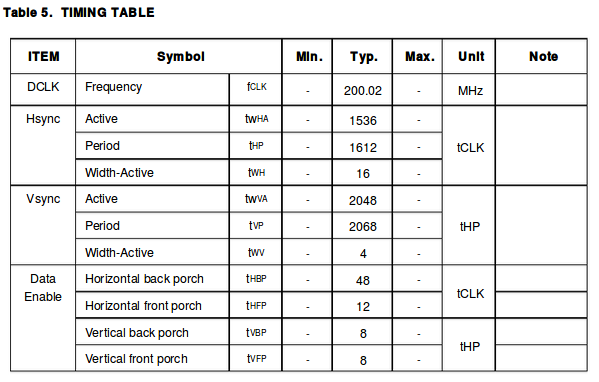

LCD驱动¶
EDP(LP079QX1)¶
LP079QX1时序如下图

edp timing¶
lcd panel在dts中的描述
panel: panel {
compatible = "simple-panel";
backlight = <&backlight>;
power-supply = <&vcc_lcd>;
enable-gpios = <&gpio1 13 GPIO_ACTIVE_HIGH>;
prepare-delay-ms = <20>;
enable-delay-ms = <20>;
display-timings {
native-mode = <&timing0>;
timing0: timing0 {
clock-frequency = <200000000>;
hactive = <1536>;
vactive = <2048>;
hfront-porch = <12>;
hsync-len = <16>;
hback-porch = <48>;
vfront-porch = <8>;
vsync-len = <4>;
vback-porch = <8>;
hsync-active = <0>;
vsync-active = <0>;
de-active = <0>;
pixelclk-active = <0>;
};
};
ports {
panel_in: endpoint {
remote-endpoint = <&edp_out>;
};
};
};
背光配置
&backlight {
status = "okay";
enable-gpios = <&gpio4 29 GPIO_ACTIVE_HIGH>;
};
LCD电源配置
vcc_lcd: vcc-lcd {
compatible = "regulator-fixed";
regulator-name = "vcc_lcd";
gpio = <&gpio4 30 GPIO_ACTIVE_HIGH>;
startup-delay-us = <20000>;
enable-active-high;
regulator-min-microvolt = <3300000>;
regulator-max-microvolt = <3300000>;
regulator-boot-on;
vin-supply = <&vcc5v0_sys>;
};
配置VOPB->eDP->Panel¶
配置VOPB->eDP
&edp_in_vopl {
status = "disabled";
};
&edp_in_vopb {
status = "okay";
};
&route_edp {
connect = <&vopb_out_edp>;
status = "okay";
};
配置eDP->Panel
&edp {
status = "okay";
force-hpd;
ports {
port@1 {
reg = <1>;
edp_out: endpoint {
remote-endpoint = <&panel_in>;
};
};
};
};
panel: panel {
ports {
panel_in: endpoint {
remote-endpoint = <&edp_out>;
};
};
};
调试相关¶
查看当前显示信息
[root@rk3399:/]# cat /sys/kernel/debug/dri/0/summary
VOP [ff900000.vop]: ACTIVE
Connector: eDP
overlay_mode[0] bus_format[1009] output_mode[f] color_space[0]
Display mode: 1536x2048p60
clk[200000] real_clk[200000] type[0] flag[a]
H: 1536 1548 1564 1612
V: 2048 2056 2060 2068
win0-0: ACTIVE
format: AR24 little-endian (0x34325241) SDR[0] color_space[0]
csc: y2r[0] r2r[0] r2y[0] csc mode[0]
zpos: 0
src: pos[0x0] rect[1536x2048]
dst: pos[0x0] rect[1536x2048]
buf[0]: addr: 0x0000000000cdd000 pitch: 6144 offset: 0
win1-0: DISABLED
win2-0: DISABLED
win2-1: DISABLED
win2-2: DISABLED
win2-3: DISABLED
win3-0: DISABLED
win3-1: DISABLED
win3-2: DISABLED
win3-3: DISABLED
post: sdr2hdr[0] hdr2sdr[0]
pre : sdr2hdr[0]
post CSC: r2y[0] y2r[0] CSC mode[1]
VOP [ff8f0000.vop]: DISABLED